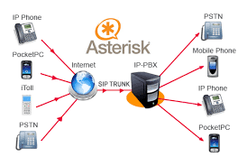

Montaje y administración de redes de datos
El montaje y administración de redes de datos es una actividad fundamental para garantizar la conectividad y el flujo eficiente de información en cualquier organización moderna. Consiste en diseñar, instalar, configurar y mantener infraestructuras que permitan la comunicación entre dispositivos y sistemas, asegurando que los datos se transmitan de manera segura y rápida.
En primer lugar, el montaje implica seleccionar el hardware adecuado, como routers, switches, cables y puntos de acceso inalámbricos, que se adapten a las necesidades específicas del entorno. La planificación inicial es clave, ya que debe considerarse la topología de red, el tipo de conexión, el alcance y la escalabilidad futura. Se debe tener en cuenta también la seguridad desde el diseño, incluyendo la segmentación de redes para limitar accesos no autorizados y proteger la información sensible.
La administración de redes, por otro lado, es un proceso continuo que abarca la configuración de dispositivos, la monitorización del tráfico, la resolución de problemas y la actualización constante de los sistemas para mantener la eficiencia y la seguridad. Un administrador de redes debe implementar políticas claras de acceso, realizar backups periódicos y usar herramientas de análisis para detectar anomalías o posibles ataques.
Además, la virtualización de redes y la implementación de tecnologías como VLANs (Virtual LANs) o SDN (Software Defined Networking) permiten optimizar el uso de los recursos y mejorar la gestión. La correcta administración impacta directamente en la productividad de la empresa, ya que una red bien mantenida reduce tiempos de inactividad y facilita el trabajo colaborativo entre empleados y departamentos.
Finalmente, la capacitación continua y el seguimiento de nuevas tendencias tecnológicas son vitales para anticiparse a posibles vulnerabilidades y adaptar la red a las nuevas demandas del negocio, garantizando así la continuidad operativa y la satisfacción del cliente.
Virtualización de servidores
La virtualización de servidores es una técnica que permite crear múltiples entornos virtuales dentro de un único servidor físico, optimizando el uso de recursos y reduciendo costos en infraestructura. Esta tecnología ha revolucionado la manera en que las empresas gestionan sus sistemas, permitiendo mayor flexibilidad, escalabilidad y eficiencia.
Mediante la virtualización, se pueden ejecutar varios sistemas operativos y aplicaciones de manera simultánea en una misma máquina, aislados entre sí para evitar conflictos y mejorar la seguridad. Esto se logra gracias a un software llamado hipervisor, que actúa como intermediario entre el hardware físico y las máquinas virtuales, asignando recursos como CPU, memoria y almacenamiento según las necesidades de cada entorno.
Una de las grandes ventajas de la virtualización es la reducción del espacio físico y consumo energético, ya que se minimiza la cantidad de servidores físicos necesarios. Esto no solo disminuye costos, sino que también facilita la administración y mantenimiento del parque tecnológico. Además, la virtualización permite implementar entornos de prueba y desarrollo sin afectar la operación del sistema principal.
Otro beneficio importante es la alta disponibilidad y recuperación ante desastres. Al contar con servidores virtuales, es posible migrar máquinas virtuales entre diferentes servidores físicos sin interrupciones, lo que asegura la continuidad del negocio incluso ante fallas de hardware. Asimismo, los backups y restauraciones son más ágiles y eficientes.
La virtualización también fomenta la innovación tecnológica, pues facilita la implementación de nuevas aplicaciones y servicios sin necesidad de comprar nuevo hardware, acelerando los procesos de despliegue y actualización. Esto es especialmente valioso en entornos de nube híbrida y multicloud, donde la gestión de recursos debe ser ágil y flexible.
En resumen, la virtualización de servidores representa una herramienta estratégica para las organizaciones modernas, mejorando la eficiencia operativa, reduciendo costos y potenciando la capacidad de adaptación ante los cambios del mercado.
Telefonía VoIP sobre Asterisk

La telefonía VoIP (Voice over IP) sobre Asterisk es una solución avanzada que permite la transmisión de voz a través de redes de datos utilizando el protocolo IP, en lugar de las líneas telefónicas tradicionales. Asterisk es un software de código abierto que funciona como una central telefónica privada (PBX), ofreciendo flexibilidad y múltiples funcionalidades para la comunicación empresarial.
VoIP con Asterisk transforma cualquier conexión a internet en un canal para realizar llamadas telefónicas, lo que reduce significativamente los costos operativos, especialmente en comunicaciones internacionales o de larga distancia. Además, ofrece integración con otros sistemas y aplicaciones, permitiendo funcionalidades avanzadas como buzón de voz, conferencias, grabación de llamadas, y respuestas automáticas.
Una de las grandes ventajas de Asterisk es su capacidad de personalización, ya que puede configurarse para adaptarse a las necesidades específicas de cada empresa, desde pequeñas oficinas hasta grandes corporativos. Esto se logra mediante la edición de archivos de configuración o el uso de interfaces gráficas que simplifican su administración.
La implementación de VoIP sobre Asterisk requiere de una adecuada infraestructura de red, asegurando calidad de servicio (QoS) para evitar latencias, cortes o pérdida de paquetes durante las llamadas. Además, es fundamental contar con medidas de seguridad para proteger las comunicaciones contra ataques como el spoofing o el fraude telefónico.
La telefonía VoIP facilita la movilidad, ya que los usuarios pueden realizar y recibir llamadas desde cualquier lugar con acceso a internet, utilizando dispositivos móviles o computadoras, lo que aumenta la productividad y mejora la atención al cliente. También simplifica la integración con sistemas CRM y otras plataformas empresariales.
En conclusión, Asterisk es una plataforma potente y versátil que, combinada con VoIP, ofrece una solución completa y económica para la gestión de comunicaciones, adaptándose a las demandas tecnológicas actuales y futuras.
Mantenimiento de plataformas informáticas
El mantenimiento de plataformas informáticas es un conjunto de actividades destinadas a garantizar el correcto funcionamiento, rendimiento y seguridad de los sistemas y equipos tecnológicos en una organización. Este proceso es esencial para prevenir fallas, prolongar la vida útil del hardware y software, y asegurar la continuidad de las operaciones.
El mantenimiento puede dividirse en correctivo, preventivo y predictivo. El correctivo se realiza cuando ocurre una falla o problema, buscando restaurar el sistema lo más rápido posible. El preventivo consiste en realizar revisiones periódicas, actualizaciones y limpiezas para evitar posibles fallas. El predictivo utiliza herramientas de monitoreo y análisis para anticipar problemas basándose en datos y tendencias.
Las tareas comunes incluyen la actualización de software, instalación de parches de seguridad, limpieza física de los equipos para evitar sobrecalentamientos, gestión de backups, y optimización del rendimiento del sistema. También es vital la supervisión constante para detectar vulnerabilidades o ataques que puedan comprometer la integridad de la información.
Un mantenimiento adecuado mejora la experiencia del usuario final, reduce tiempos de inactividad y evita pérdidas económicas derivadas de fallas inesperadas. Además, garantiza que los sistemas cumplan con normativas y estándares de calidad y seguridad, lo cual es especialmente importante en sectores regulados como salud, finanzas y gobierno.
El equipo encargado del mantenimiento debe estar capacitado y actualizado en las últimas tecnologías y prácticas del sector, ya que los sistemas informáticos evolucionan constantemente y presentan nuevos desafíos. La automatización de algunas tareas mediante software especializado también contribuye a aumentar la eficiencia y reducir errores humanos.
En definitiva, el mantenimiento de plataformas informáticas es una inversión estratégica para cualquier organización que dependa de la tecnología, asegurando que sus recursos estén siempre disponibles, seguros y funcionando al máximo rendimiento.